CODE Snippest
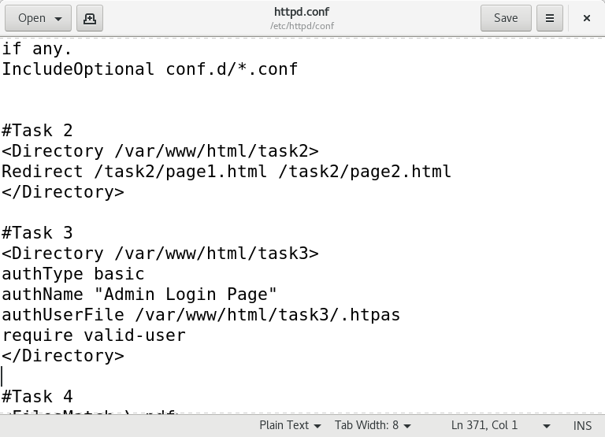
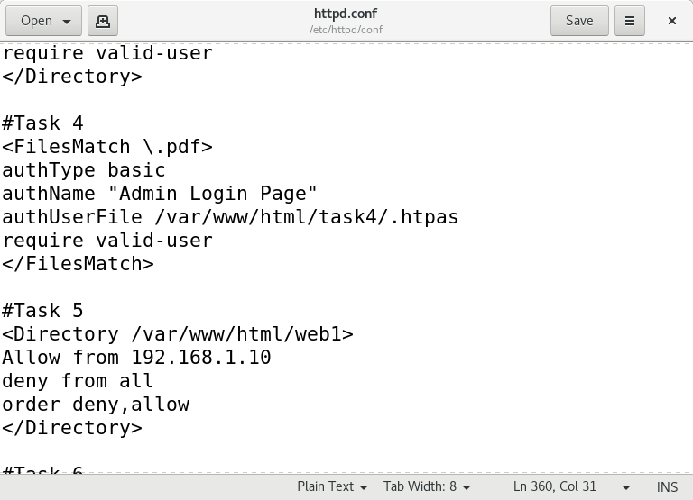
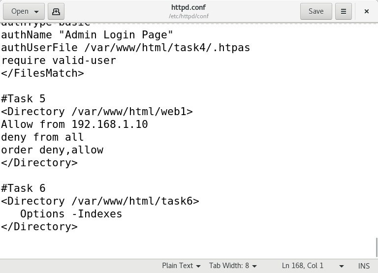
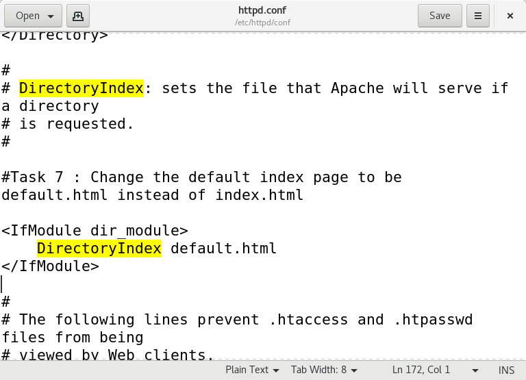
1. Install Apache HTTP server
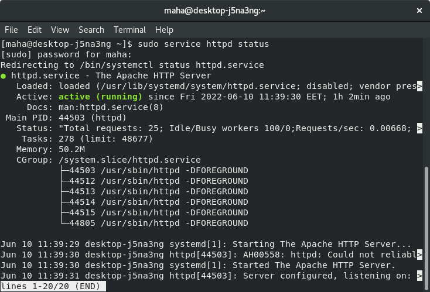
2. Create two simple html pages named “page1.html, page2.html” then use the suitable
directive to automatically redirect from localhost/page1.html to
localhost/page2.html.
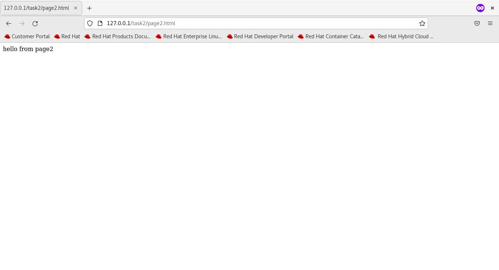
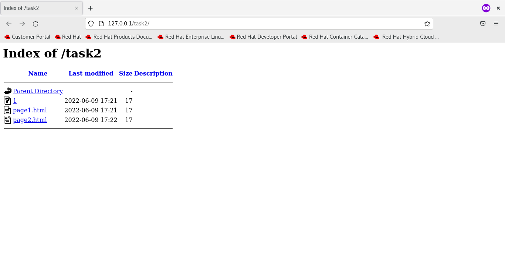
3. Ask for user name and password when accessing a directory
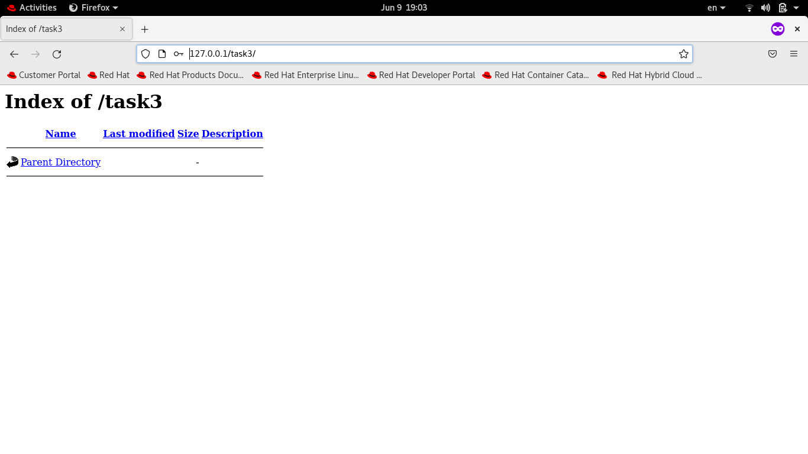
4. Apply authentication before downloading PDF files.
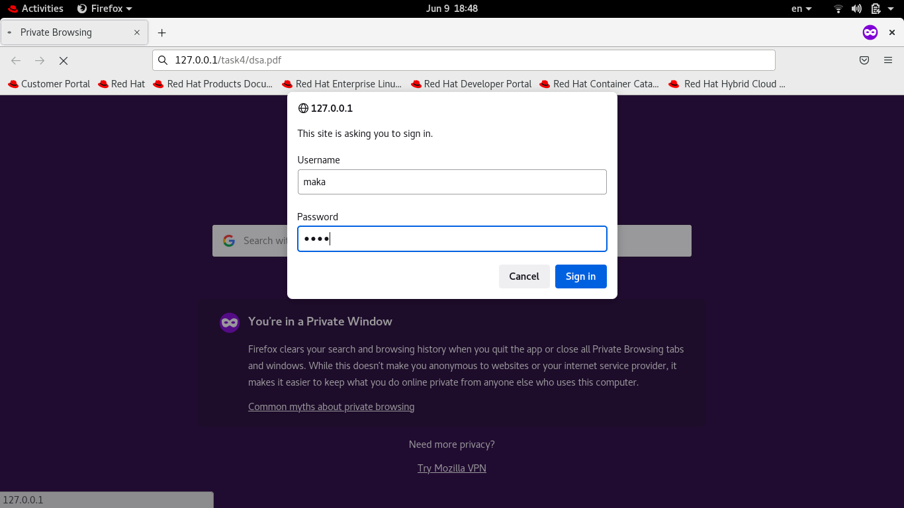
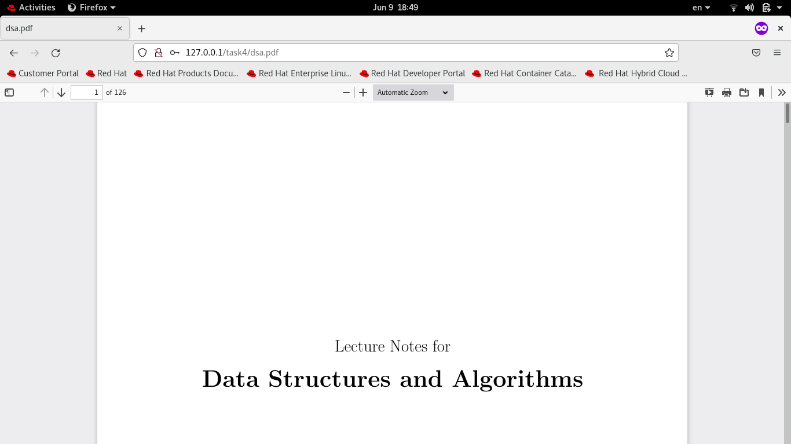

5. Create a directory then allow access to one of your classmates only.
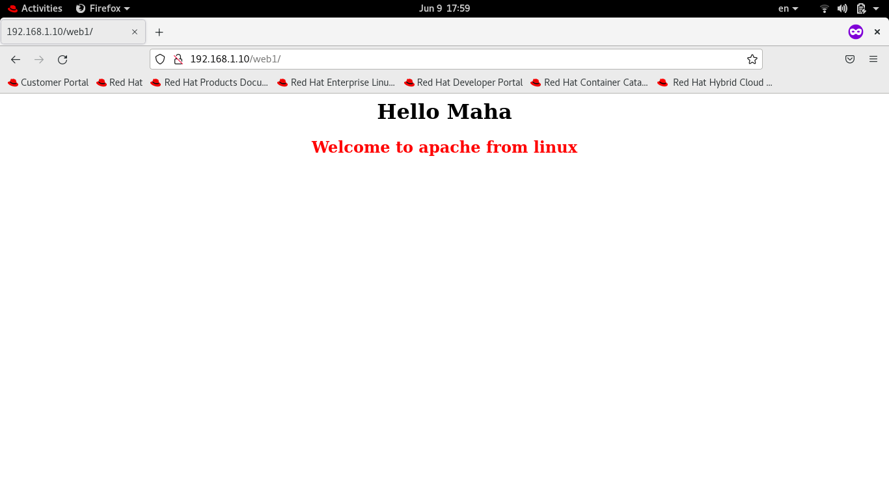
6. Disable listing the directory content (hint use indexs)
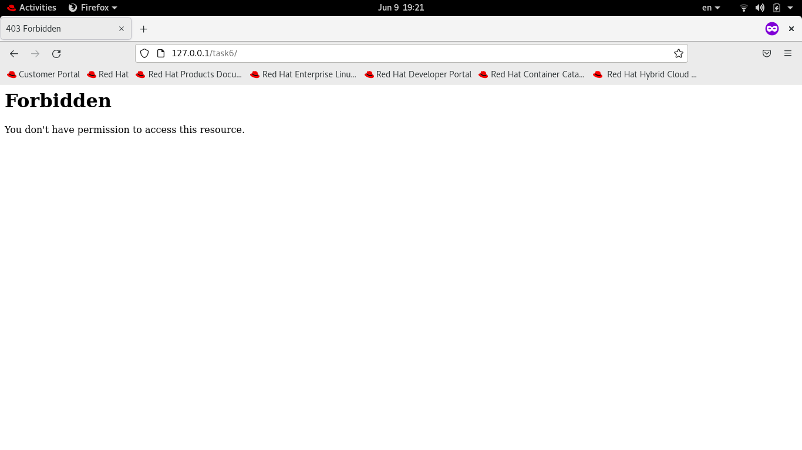
7. Change the default index page to be default.html instead of index.html (use
DirectoryIndex)
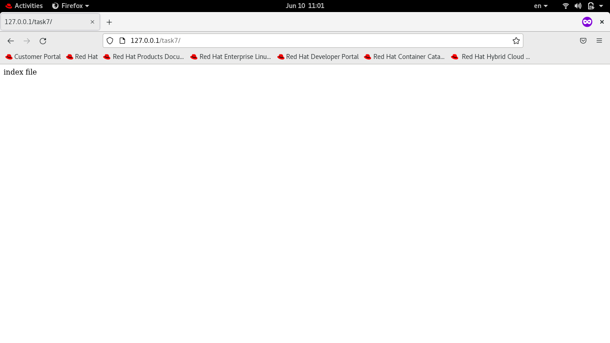